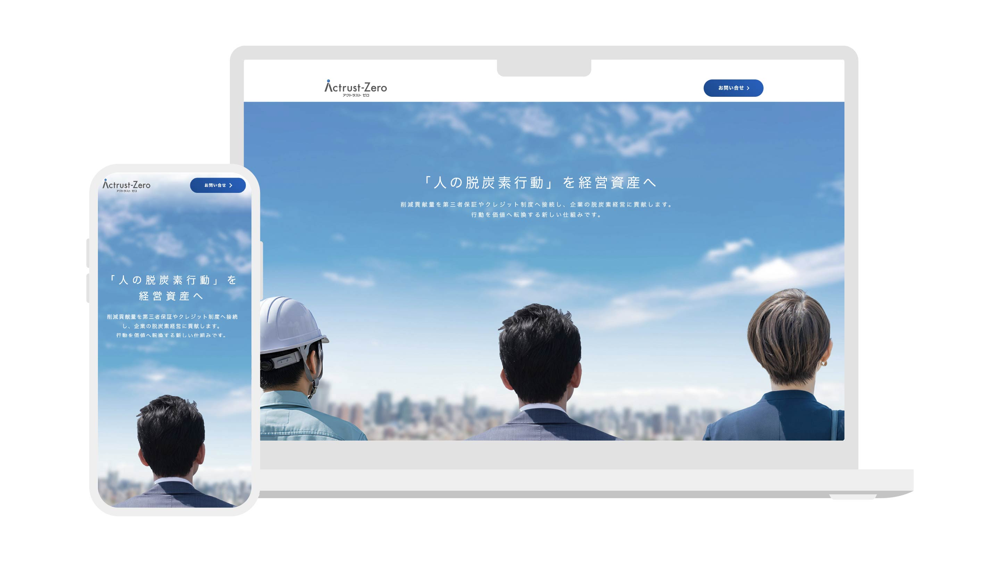
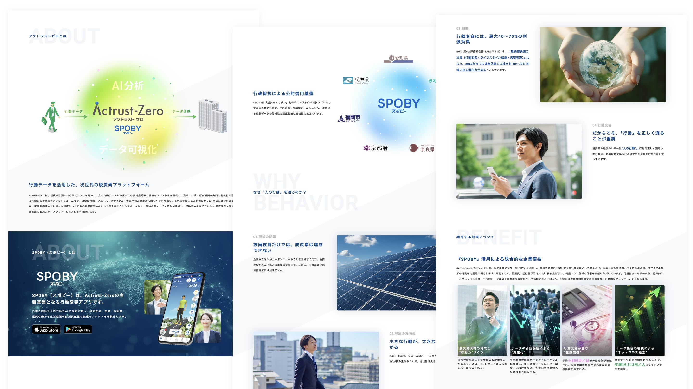
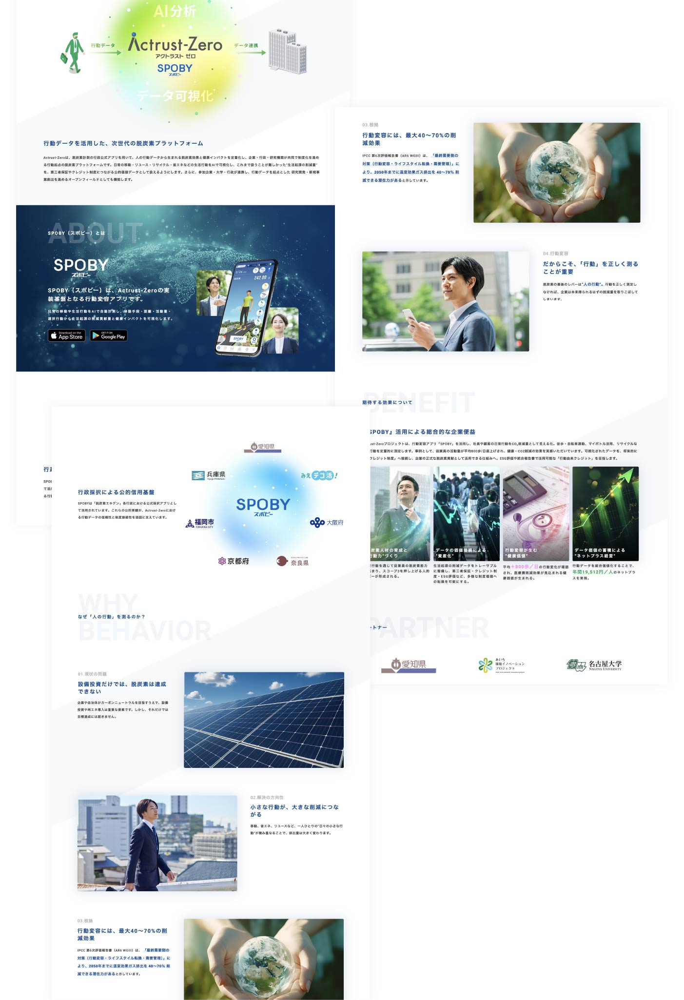
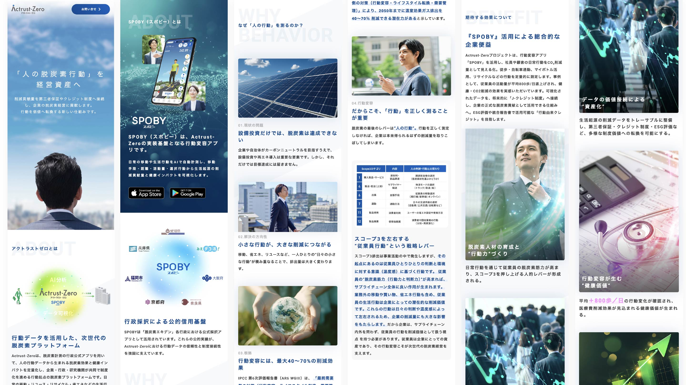
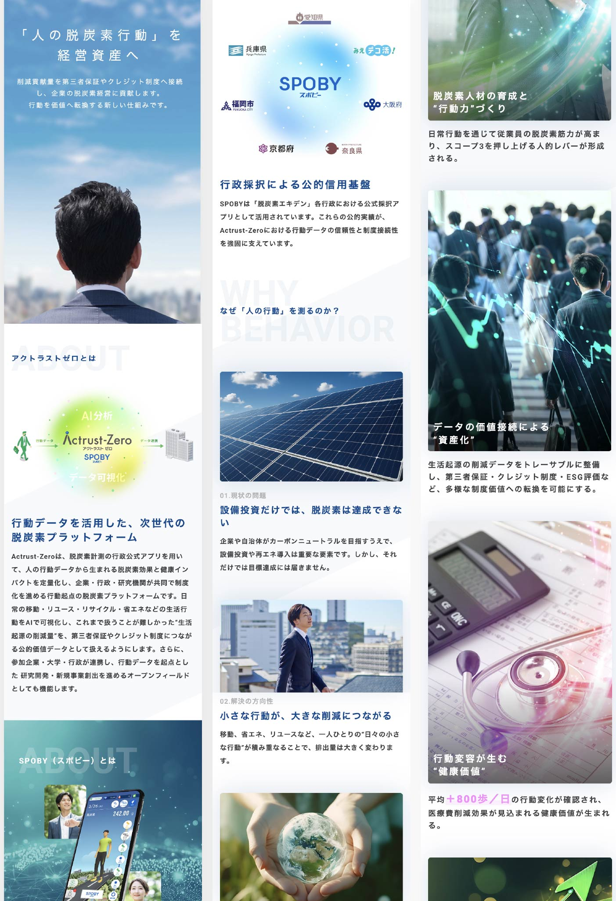

制作物名
制作背景・意図
Actrust-Zero Webサイト
- 制作条件・概要
-
-
誰に向けたものか
脱炭素施策や健康増進施策の導入を検討している企業・自治体の担当者を主な対象
-
何を伝えるものか
人の行動データを起点とした脱炭素プラットフォームという新しい概念を扱うサービスであるため、その価値や仕組みを企業・行政関係者に理解してもらい、導入に繋げる役割を担うページ
-
どこで使われるか
Actrust-Zeroサイト
-
誰に向けたものか
- 背景・課題
-
-
人の行動データを起点とした脱炭素プラットフォームという新しい概念について、Actrust-Zeroの価値や仕組みを企業・行政関係者に正しく理解してもらい、導入・連携を判断できる状態をつくることを目的として制作しました。あわせて、サービス理解の先に問い合わせや協業検討へとつながる導線を設け、SPOBYサービスの活用・展開を促進することも意識しています。
-
- 制作目的
-
-
Actrust-Zeroは、人の行動データを起点とした脱炭素プラットフォームという新しい概念を扱うサービスであるため、その価値や仕組みを企業・行政関係者に正しく理解してもらうことを主な目的として制作しました。また、サービス理解の先に問い合わせへとつながる導線を設けることで、企業・行政との連携を促し、SPOBYサービスの活用・展開につなげることも意識しています。
-